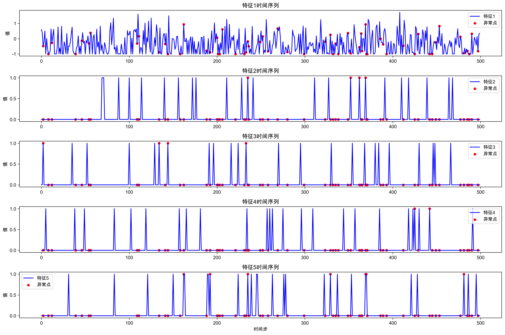
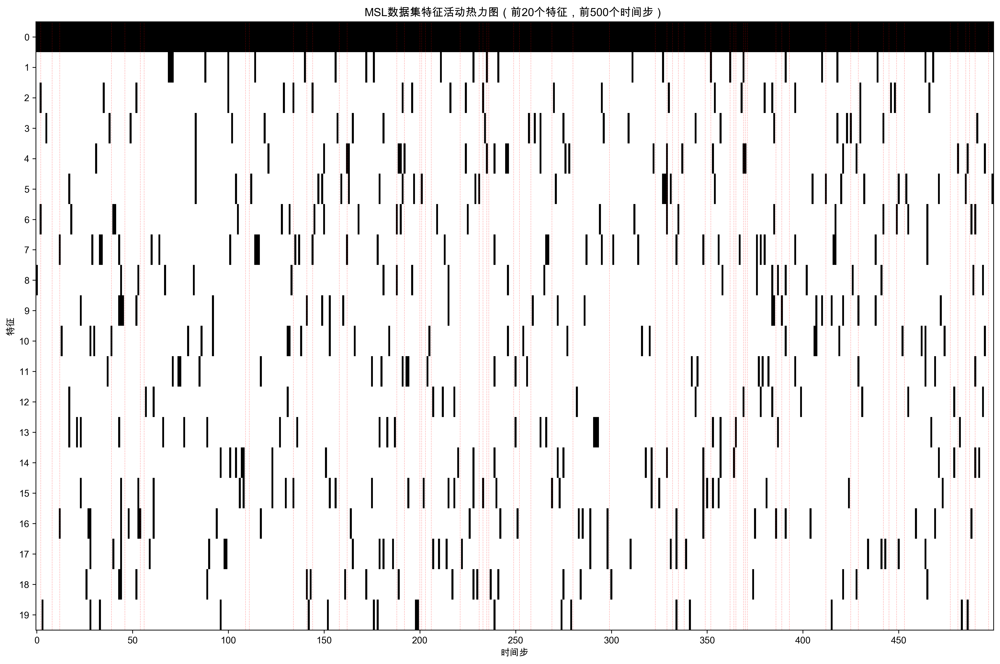
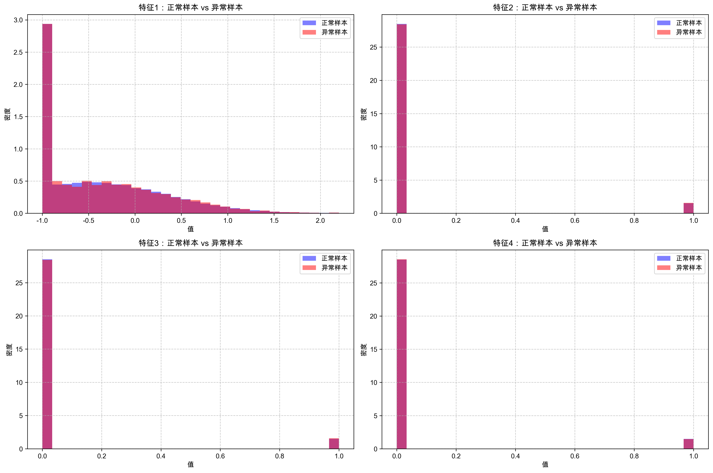

1. 数据集概述
MSL (Mars Science Laboratory) 数据集是NASA提供的时间序列异常检测数据集，来源于火星科学实验室任务中的传感器数据。该数据集包含多个传感器的测量值，可用于开发和评估异常检测算法。
数据集特点
- 时间序列数据，具有时序依赖性
- 多特征传感器数据
- 类别不平衡（异常样本约占10.53%）
- 部分特征存在较强相关性
- 数据已进行预处理和标准化
数据格式
- 训练集：npy格式，形状为(58317, 55)
- 测试集：npy格式，形状为(73729, 55)
- 测试标签：npy格式，形状为(73729,)，0表示正常，1表示异常
2. 数据样例展示
以下是从训练集和测试集中随机选取的样本数据，展示了前10个特征的值。从样本数据可以看出，大部分特征值为0，只有少数特征有非零值，这反映了MSL数据集的稀疏性特点。
3. 数据统计特征
对MSL数据集的特征进行统计分析，计算了每个特征的最小值、最大值、平均值、中位数和标准差等统计指标。这些统计信息有助于理解数据的分布特征和异常情况。
主要统计发现
- 特征1（首个特征）具有较大的变异性，标准差约为0.83
- 大部分特征（从特征2到特征55）呈现高度稀疏性，平均值接近0
- 特征值范围广泛，不同特征的取值范围差异较大
- 部分特征存在明显的偏态分布
4. 标签分布分析
MSL数据集的测试集包含正常样本和异常样本，其中异常样本占比约为10.53%。这种类别不平衡是异常检测问题的常见特征，需要在模型训练和评估过程中特别注意。
注意：类别不平衡可能会导致模型在训练过程中偏向于预测多数类（正常样本）。在评估模型性能时，建议使用精确率、召回率、F1分数等指标，而不仅仅是准确率。
5. 特征分布分析
对MSL数据集的前12个特征进行分布分析，有助于理解各个特征的取值范围、集中趋势和离散程度，为后续的特征选择和异常检测算法设计提供依据。
特征分布特点
- 特征1呈现近似正态分布
- 大部分其他特征呈现高度偏态分布
- 多个特征具有明显的双峰或多峰分布
- 部分特征存在异常值
分布分析意义
- 了解数据的内在结构和模式
- 识别可能的异常值和离群点
- 为数据预处理提供指导（如标准化、归一化）
- 为选择合适的异常检测算法提供依据
6. 特征箱线图分析
箱线图能够直观地展示数据的分布特征，包括中位数、四分位数、异常值等信息。通过分析MSL数据集的特征箱线图，可以更好地理解各特征的数据分布情况。
箱线图分析总结
从箱线图可以看出，MSL数据集的特征呈现出明显的差异化分布。特征1具有最宽的数据分布范围和最多的异常值，而其他特征的数据分布相对集中，大部分取值为0或接近0。这种分布特征表明，在进行异常检测时，需要考虑不同特征的权重和重要性。
7. 特征统计信息雷达图
雷达图可以同时展示多个统计指标，帮助我们比较不同特征在各个统计维度上的表现。通过雷达图，我们可以更全面地了解MSL数据集各特征的统计特性。
雷达图清晰地展示了不同特征在最小值、最大值、平均值、中位数和标准差等统计指标上的差异。特征1在所有统计指标上都表现出明显的独特性，而其他特征则相对相似。
8. 时间序列分析
时间序列分析是理解时序数据的重要手段。通过分析MSL数据集的时间序列特性，我们可以观察数据的趋势、季节性、周期性等模式，以及异常发生的时间点和上下文。
时间序列图（前5个特征，前500个时间步）

时间序列特征
- 特征1显示出明显的时序波动
- 部分特征在特定时间点出现突发值
- 异常点通常与数据的急剧变化相关
- 不同特征的时序模式存在差异
异常检测启示
- 应考虑时间上下文进行异常检测
- 不同特征的异常模式可能不同
- 结合多个特征可以提高检测准确性
- 时序模型（如LSTM、GRU）可能更适合该数据集
9. 特征相关性分析
特征相关性分析可以帮助我们理解不同特征之间的关系，识别冗余特征，以及发现潜在的数据模式。对于异常检测任务，了解特征相关性有助于设计更有效的特征组合和检测策略。
相关性分析结论
MSL数据集的特征相关性分析显示，大部分特征之间的相关性较弱（相关系数接近0），这表明各特征包含的信息相对独立。然而，仍有部分特征对之间存在一定程度的正相关或负相关。在构建异常检测模型时，可以考虑利用这些相关性来提高检测性能。
10. 特征活动分析
特征活动分析可以帮助我们了解哪些特征在何时有非零值，这对于理解数据的动态特性和异常发生的上下文非常重要。在MSL数据集这种存在大量零值的情况下，特征活动分析尤其有价值。
特征活动热力图（前20个特征，前500个时间步）

从特征活动热力图可以看出，MSL数据集的大部分特征在大部分时间步上取值为0（黑色区域），只有少数时间步上有非零值（白色区域）。红色虚线标记了异常发生的时间点，可以观察到异常发生时的特征活动模式与正常状态有所不同。
11. 正常样本与异常样本比较
比较正常样本和异常样本的特征分布，可以帮助我们理解异常的特征和模式，为设计更有效的异常检测算法提供依据。
正常样本与异常样本特征分布比较（前4个特征）

正常样本特点
- 特征值分布相对集中
- 较少出现极端值
- 时序波动较为平缓
- 特征活动模式相对稳定
异常样本特点
- 部分特征值偏离正常范围
- 特征波动幅度增大
- 特征活动模式发生显著变化
- 多个特征可能同时出现异常
12. 结论与建议
主要发现
- MSL数据集是一个时序异常检测数据集，包含58,317个训练样本和73,729个测试样本，每个样本有55个特征
- 数据集存在明显的类别不平衡问题，异常样本仅占10.53%
- 大部分特征呈现高度稀疏性，大部分时间取值为0
- 特征之间的相关性较弱，各特征包含的信息相对独立
- 异常样本与正常样本在特征分布和时序模式上存在明显差异
数据预处理建议
- 对数据进行标准化或归一化处理，使不同特征具有相同的尺度
- 考虑使用SMOTE等技术处理类别不平衡问题
- 对高度稀疏的特征进行特征选择或降维处理
- 提取时序特征，如滑动窗口统计量等
异常检测算法建议
- 考虑使用基于时序的异常检测算法，如LSTM-Autoencoder、Isolation Forest等
- 结合多种特征和检测方法，提高检测准确性
- 使用集成学习方法，综合多个检测模型的结果
- 考虑使用注意力机制，关注重要的特征和时间点
注意事项：在评估异常检测算法性能时，应综合考虑准确率、精确率、召回率、F1分数等多个指标，而不仅仅依赖于单一指标。由于数据集存在类别不平衡问题，召回率可能比准确率更能反映算法的实际性能。